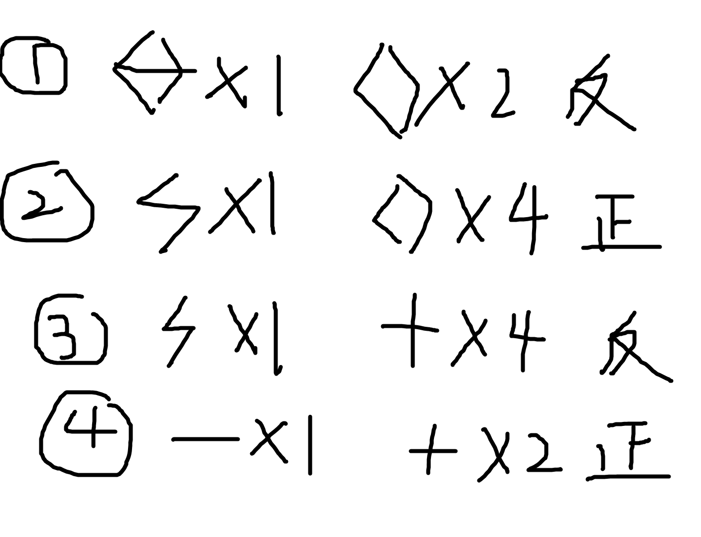

2021 Summer Petrozavodsk Camp D3 赛后总结
https://codeforces.com/gym/103469
A
没看，队友切了。
B
一道答辩的数据结构题。
核心思路是维护每次修改所可能造成的影响。
显然，除 $w$ 向下取整这个部分显然是通过取模然后减去余数再除的方式搞定。
那么就是怎么维护这个乘法的问题了。
每次改变一个数字，会使得一些数字的排名减一或者加一，然后就是计算 $b_i * (i^k-(i-1)^k)$ ，然后就是拆组合数，即只要我们维护了：
$b_i*i^j(j\le k)$ ，然后用组合数维护一下转移不就做完了吗？
类似求 $\sum i^k$ 的思路转移就行了。
时空复杂度都懒得算了，没写。
当然，题解写的 $w^2$ 我觉得可以 $w$ ，即他认为 $b_i$ 和 $i$ 都需要维护模 $w$ 的结果，构成一个二维数组，但是我觉得 $b_i$ 那维没有必要。
D
答辩题，$\frac{n^3}{w}$ 的题目 $n=4000$ ，乐。
不太难想，就是每次区间只可能更新一次，然后用 bitset 维护一下合并区间对其余区间的贡献就行了。
E
非常的 interesting ，就是每次将图分成两个部分，然后两个部分之间的边数必须是偶数条。
当时搞错了一个事情，以为只要是两个部分的边加起来是偶数也可以。
但是实际上不对，一个很简单的道理：欧拉回路的边数有可能是奇数的，减一减就知道这个说法不对了。
F
非常的有意思，两次操作和固定，所以实际上我们只需要关心一个变量。
两次操作分别为：$2x,2x-sum$ ，这个时候题目给的总和不能被 $p$ 整除就有用了，如果我们将目标和 $x$ 都除 $sum$ ，那么就可以变成枚举 $x*2^k$ ，然后减去一些 $2$ 的次幂，直接判断 $x-goal$ 能不能被拼出来就行了。
时间复杂度：$q\log{p}$ 。
1 |
|
G
非常神奇的计数题。
实际上队友1说的话非常的正确，你的每种计数都能得到一个方程，现在就是用方程去拼出想要的方程。
这道题目的技巧在于灵活的应用正图和反图进行容斥，比如有些只用正图得不到的方程是可以通过在反图中的计数得到结果的。
计数过程需要用到 bitset 。
时间复杂度：$O(\frac{n^3}{w})$ 。

结果就为：$\frac{2+3}{2}-1-4$ 。
H
大分类讨论题，不知道队友怎么过的。
I
不会。
J
简单来说，假设 $p,q$ 序列已知，那么我们能构造一种映射使得 $s$ 和矩阵一一对应。
对应方法如下：
特殊的，我们可以认为：$p_i=n-i+1$ ，那么从大到小依次放下 2n~1 ，假设我们 $p$ 放了 $x$ 个，$q$ 放了 $y$ 个，$s_{x+1}=1$ ，显然直接放在 $p$ ，否则只有当 $q_{x+1}$ 被放了数字才能且必须立即在 $p_{x+1}$ 的位置放下数字。
然后就做完了。
现在考虑怎么维护 $0$ ，多加一维不就行了？
显然，我们只要知道 $q$ 序列中 $0$ 的对应位置有多少个位置矩阵上下都放了数字，我们就能推出所有的情况。
即：$00,01,10,11$ ，知其一即可知所有。
然后按照对应方法转移即可。
时间复杂度：$O(n^3)$ 。
当然，实际转移是 $4$ 维的，需要维护一维 $0/1$ 。
官方题解
我们不妨认为 $p_i=i$ ，那么一个合法的 $01$ 序列有多少呢？
答案是 $q$ 的上升子序列个数。
定义一个序列的标志子序列为从第一个位置开始，每次往后跳到第一个大于自己的位置所构成的子序列，叫做标志子序列。 把 $1$ 对应位置的 $q$ 抽出来构成一个子序列，那么任意两个子序列中的的标志子序列不会相同。 简单来说，我们考虑一个标志子序列可以找到多少个序列。 可以发现如果 $i 所以当我们把标志子序列的对应位置标为 $1$ 时，就会有很多位置也对应的标记为 $1$ ，而不是 $1$ 的位置观察一下可以发现，如果将其标为 $1$ ，就会改变标志子序列，所以一个标志子序列只能找到一个序列，同理，一个序列只能找到一个标志子序列。 但是标志子序列这样找到的 $s$ 序列一定合法吗？手操一下就发现一定可以构造出对应的矩阵，所以一定合法。 然后做法也是类似的，从小到大考虑 $q$ 。 $f[i][j][k][0/1]$ 表示前 $i$ 个数字，目前进行到了 $j$ ，前面有 $k$ 个空，$0/1$ 表示强不强制让 $j$ 成为上升子序列的一部分的方案数。 基本 DP 都差不多。 那么这个做法有什么优势呢？ 但是我的做法可以算序列中 $1$ 的数量，他的算不了，只能说，只能判定是否合法的定理是这样子的。 会导致这两个做法区别的原因是方向不同： 但是你要说这两个做法完全没有一点联系吗？那还是有的，就是： 我的做法其实也可以推出更加本质的官方做法。 那么显然，只要我放下了一个 $0$ ，前面的所有 $q$ 大于我的都必须标 $0$ ，有没有发现和前面的官方做法莫名类似？ 所以，这个时候就可以这样干：从后往前跑一个递减序列，类似的定义，递减序列的位置必须为 $0$ ，同时其余必须标为 $0$ 的位置也标为 $0$ ，这个时候没有被标为 $0$ 的位置也不能标为 $0$ ，否则会破坏递减序列。正过来看发现也是找递增子序列，这样就得到了官方做法。 但是可以发现这两个做法有点冲突，怎么一个放 $0$ ，一个放 $1$ 呢？但其实也不难理解，不过是一个从 $0$ 的角度考虑计数，一个从 $1$ 的角度考虑计数罢了，没有什么冲突的点。 但是我们不妨还是来找一点事情来做，对于一个 $s$ 序列，我们找到其的标志递增序列和标志递减序列，现在证明一下一个数字不可能既强制标记为 $0$，又强制标记为 $1$ 。（其实这个事情是完全没必要的，因为对于一个合法序列，其一定存在两种标志序列，而又是因为合法，所以两种强制标记不可能同时作用在一个位置，否则与合法这个前提相矛盾。但是从序列的角度研究一下其为什么不会标记在同一个位置说不定可以发现一些新的东西。） 其实也很简单：在一个合法序列中，假设 $i$ 标志递增序列 ，而 $j$ 是 标志递减序列，且 $i证明
</div></details>
对于 $i$ 如果 $j>i$ 的位置填了一个 $0$ ，且 $q_j1
2
3
4
5
6
7
8
9
10
11
12
13
14
15
16
17
18
19
20
21
22
23
24
25
26
27
28
29
30
31
32
33
34
35
36
37
38
39
40
41
42
43
44
45
46
47
48
49
50
51
52
53
54
55
56
57
58
59
60
using namespace std;
typedef long long LL;
const LL mod=998244353;
LL dp[N][N][N][2];
int a[N],ba[N],b[N],bb[N],f1[N],f2[N],n;
int main(){
scanf("%d",&n);
fep(i,1,n){scanf("%d",&a[i]);ba[a[i]]=i;}
fep(i,1,n){
scanf("%d",&b[i]);
if(!b[i])f1[a[i]]++;
else f2[b[i]]++;
bb[b[i]]=i;
}
bb[0]=0;
feq(i,n,1)f1[i]+=f1[i+1],f2[i]+=f2[i+1];
dp[n][n][0][0]=1;
feq(i,n,0){
feq(j,n,0){
feq(k,f1[i+1],0){
feq(t,1,0){
int v10=f1[i+1]-k,v01=(n-j)-f2[j+1]-k,v00=(n-f2[1])-v01-v10-k;
if(i){
int x=ba[i];
// if(i==n && j==n && !k && !t){
// printf("%d %d\n",x,b[x]);
// }
if(!b[x]){
/*OK*/
if(v00 && t==0)dp[i-1][j][k][0]=(dp[i-1][j][k][0]+dp[i][j][k][t])%mod;
if(v01 && t==0)dp[i-1][j][k+1][0]=(dp[i-1][j][k+1][0]+dp[i][j][k][t]*v01)%mod;
if(j && !bb[j])dp[i-1][j-1][k+1][0]=(dp[i-1][j-1][k+1][0]+dp[i][j][k][t])%mod;
}
else{
/*OK*/
if(b[x]>j){dp[i-1][j][k][0]=(dp[i-1][j][k][0]+dp[i][j][k][t])%mod;continue;}
if(j>=b[x] && t==0)dp[i-1][j][k][0]=(dp[i-1][j][k][0]+dp[i][j][k][t])%mod;
// d2[i-1][j][k]=(d2[i-1][j][k]+d2[i][j][k])%mod;
}
}
if(j){
// if(i==n && j==n && !k && !t){printf("%d %lld\n",bb[j],dp[i][j][k][t]);}
if(!bb[j]){
if(v00)dp[i][j-1][k][1]=(dp[i][j-1][k][1]+dp[i][j][k][t])%mod;
if(v10)dp[i][j-1][k+1][1]=(dp[i][j-1][k+1][1]+dp[i][j][k][t]*v10)%mod;
}
else dp[i][j-1][k][1]=(dp[i][j-1][k][1]+dp[i][j][k][t])%mod;//OK
}
}
}
}
}
printf("%lld\n",(dp[0][0][n-f2[1]][0]+dp[0][0][n-f2[1]][1])%mod);
return 0;
}
反思
即使是调试，也是讲究技巧的，能否在最短的时间找到输出调试中的异常数据，以及查明异常数据产生的来龙去脉，以及明白出错原因，以及找到最优秀的更正方法，以及在最短的时候改掉错误，都是十分讲究方法的。
很多在调试的时候，往往需要去认为哪个地方是绝对正确的，防止无效查错，同时缩小查错范围，但是又要避免错误的认为绝对正确，否则就可能一万年都发现不了眼皮子底下的错误了，这就很考验一个选手的调试功力了。
当然，提醒一点，当你认为整个代码都是绝对正确且做法绝对正确时，那大概率就是题读错了，我已经犯过至少两次这样的错误了，刻骨铭心啊。
K
不会，人类智慧。
L
大性质题，悲。
其中的某几个性质是特别关键的，找不到这题就寄了，然后我就寄了。
简单来说，对于序列 $A,B$ 和相邻的两个位置，一定存在一个一对相同的字母，因为其是好的字符串。
这样可以发现，任意两个长度为 $2n+1$ 的字符串最长公共长度至少是 $n$ ，所以我们不能让其退化到 $n+1$ 。（实际上你继续看下面的做法就会发现，这两个结论的限制能力是多么的恐怖，可以说这道题目没发现这两个性质就是几乎做不了的。）
然后，接下来就需要你打表或者手模找规律了。
因为其实可行的串的模式就两种（这里的 $A,B,C$ 可以轮换）：
?A?A?A?A?…
?A?A?A?A?…
模式为在第一个串中，选一个分界点，左边填 $B/C$ 的其中一个，另外一边填另一个，同时第二个字符串的 $?$ 填第一个字符串相同位置的相反字符。（如果是 $B$ 就填 $C$ ，反之亦然）
ABABABABABAB…
C?C?C?C?C?C?…
? 里面随便填 $A,B$ 。
至于证明，没有详细证过，但是感觉就是归纳证明。
首先证明只要符合这种模式就一定可行（好证），然后证明不符合这种模式就不可行。
证明不可行我感觉就是归纳，反正我是手模了前 $5$ 个位置发现确实只有这两种模式符合，然后往后归纳的部分没怎么想，感觉基本就是讨论一下就证完了，但是是讨论，所以我就没细想了。
但是感觉是不是从前 $1$ 个位置开始直接归纳是不是也可以啊，到时候再看看吧，现在先鸽了。
反正做法就是这么一个做法，直接扫描一下所有的情况差不多就做完了，时空复杂度应该是 $O(n)$ 的，就是可能要扫很多情况，2333。
到时候看看有没有更加容易实现的方法吧，现在先鸽了，2333。
M
啊？根号过 1e6 ？
逆天。
暴力跑，$O(n+m\sqrt{m})$ 。
相信奇迹。
1 |
|
坑
- 亲手写一些代码。
- 补充一个关于状态转移和状态转移优化的理解。
- 把没有做的题目自己做一遍。
- 自己去看一遍官方题解并且补充一下官方题解的做法。
- 补充一下 L 题的详细证明。
- 仔细思考一下 G 题的本质，好像说是给了正图跟反图，是可以通过容斥把同色四元环给消掉，所以这道题目才做的了的，不太清楚，到时候再看看。（同机房的同学说的，但是我没有细想。）